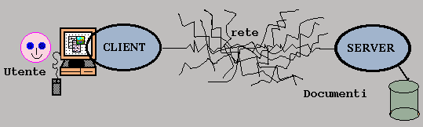

Un protocollo è un insieme di regole che permettono di trovare uno standard di comunicazione tra diversi computer attraverso la rete, dove per rete si intende un insieme di due o più computer connessi tra di loro ed in grado di condividere informazioni. Quando due o più computer comunicano tra di loro si scambiano una serie di informazioni. Per potersi scambiare informazioni, i vari computer devono avere dei protocolli che permettano di attribuire ad un determinato comando un significato univoco per tutte le macchine.
Un protocollo descrive:
• il formato che il messaggio deve avere
• il modo in cui i computers devono scambiarsi messaggi
Ogni protocollo viene riferito ad una particolare attività, come ad esempio spedire messaggi attraverso la rete, stabilire connessioni remote, oppure trasferire files.
Pensiamo ad un messaggio di posta elettronica. Sia il formato del messaggio, sia il modo in cui viaggia attraverso la rete sono governati da un protocollo. Il protocollo assicura che il messaggio sia formattato e trasmesso correttamente dal mittente al destinatario (che in questo caso sono computer).
Esiste un protocollo diverso per ogni tipologia di servizio di rete. Per esempio la connessione ad Internet è basata sulla famiglia di protocolli TCP/IP.
Altri protocolli utilizzati sono:
• Simple Mail Transfer Protocol (SMTP) - per la gestione dei messaggi di posta elettronica
• File Transfer Protocol (FTP) - per il trasferimento di files tra macchine remote
• Hypertext Transfer Protocol (HTTP) - per la trasmissione di informazioni attraverso il WEB
• Network News Transfer Protocol (NNTP) - per la gestione dei gruppi di discussione
•Gopher permette un servizio di informazione distribuita ed organizzata ad albero, consistente in una serie di menu e files interconnessi tra loro
•WAIS - Wide Area Information System - permette la ricerca ed il recupero in data base connessi in rete
WWW è interfacciato con un certo numero di server che colloquiano attraverso protocolli standard TCP/IP ed altri che si servono di standard più ad alto livello come il nuovo HTTP (HyperText Transfer Protocol) creato apposta per il trasferimento del formato HTML (HyperText Marked Language).
Tutti i clients e servers Web devono essere capaci di gestire questo protocollo affinché possano scambiarsi i documenti ipermediali, per questa ragione i Web servers sono anche chiamati HTTP servers.

L'HTTP è un protocollo "stateless" (senza memoria) che permette sia la ricerca che il recupero dell'informazione in maniera veloce, e permette quindi di seguire i rimandi ipertestuali . La scelta di un protocollo "stateless", cioè di un protocollo che non "conserva memoria" della connessione fatta, è stata necessaria affinché fosse possibile saltare velocemente da un server ad un altro attraverso i "links" ipertestuali.
HTTP ad ogni richiesta effettua una nuova connessione al server che viene chiusa al termine del trasferimento dell'oggetto richiesto (pagina HTML, immagine, ecc.).
È gestito da un software (server HTTP) residente sugli host che intendono essere fornitori di informazioni. Chi vuole accedere alle informazioni fornite dal server HTTP deve utilizzare un software client (browser) in grado di interpretare le informazioni inviate dal server.
IL SERVER, informalmente, è un programma che "gira" in attesa di una richiesta di connessione sul suo socket (la porta assegnatagli, tipicamente la 80). Il protocollo viene utilizzato da un processo daemon (cioè sempre in esecuzione)
Questo protocollo è invocato da TCP/IP ogni qualvolta l'URL (che è una stringa che specifica la risorsa a cui riferirci) istanziata contiene nel primo campo la parola http. I comandi utilizzati per comunicare con esso sono detti Metodi.
Un server WWW ha il compito (potenzialmente computazionalmente dispendioso) di rispondere a tutte le richieste che giungono dalla rete. Basti pensare che server WWW di siti professionali raggiungono facilmente le 300.000 richieste al giorno.
Per aumentare l’efficienza si è progettato una nuova versione del protocollo HTTP . E’ la versione 1.1, attualmente in fase di proposizione come standard, che permette di utilizzare la stessa connessione TCP/IP per effettuare operazioni multiple.
L'acquisizione del documento da parte del client può essere schematizzata in quattro fasi :
I così detti "indirizzi IP" di Internet, ovvero i dati identificativi univoci che tutti gli elaboratori collegati a Internet devono avere sono gestiti essenzialmente dal protocollo IP. Questi indirizzi sono formati da quattro ottetti, ognuno dei quali può rappresentare un numero da 0 a 255. Per descriverli non si usa però un numero tra zero e quattro miliardi, ma una tecnica diversa: ogni indirizzo è indicato con una sequenza di quattro numeri, ognuno corrispondente a un ottetto e quindi compreso tra 0 e 255, separati da un punto. Per esempio un indirizzo di Internet potrebbe essere 10.0.231.32. Questo perché gli indirizzi di Internet sono raggruppati, per motivi di gestione, in varie classi:
•classi A: sono quelle in cui il primo ottetto è compreso tra 0 e 126;
•classi B: i primi due ottetti sono compresi tra 128.1 e 191.254;
•classi C: i primi tre ottetti sono compresi tra 192.0.1 e 223.255.254;
•classi D: sono quelle compresi tra 224.0.0.0 e 239.255.255.254: vengono utilizzati per le attività in multicasting;
•classi E: sono riservate a sperimentazioni di protocolli e non possono essere utilizzati dai normali utenti.
Gli indirizzi attualmente in uso sono prevalentemente quelli di classe A, B e C. Questi indirizzi non sono mai dati singolarmente, ma per motivi di organizzazione di rete sono dati in blocchi di indirizzi adiacenti. Per la precisione, tutti gli indirizzi di classe A con lo stesso primo ottetto appartengono allo stesso ente, e lo stesso per gli indirizzi di classe B con i primi due ottetti uguali o per gli indirizzi di classe C con tre ottetti uguali. Per esempio, fanno parte di uno stesso blocco (di classe A) gli indirizzi da 10.0.0.0 a 10.255.255.255, gli indirizzi (di classe B) da 137.144.0.0 a 137.144.255.255 e gli indirizzi (di classe C) da 192.168.32.0 a 192.168.32.255.
Come detto, il raggruppamento degli indirizzi in blocchi è richiesto da esigenze di gestione di Internet; infatti in questo modo dagli ottetti iniziali di un indirizzo è possibile individuare l'ente proprietario, e questo rende più facile tentare di raggiungere l'elaboratore cercato: infatti in genere basta raggiungere l'ente proprietario che si occuperà di far giungere il messaggio a destinazione. Si ha però la sgradevole conseguenza che molti indirizzi rimangono inutilizzati: se un ente possiede una classe B con 65 536 indirizzi ma solo 500 elaboratori, gli altri 65 036 indirizzi non possono essere utilizzati da nessun altro.
L'uso degli indirizzi di Internet, ottimale per gli elaboratori, è invece piuttosto scomodo per le persone. Da questa considerazione è nata l'esigenza di sviluppare un meccanismo che permettesse di utilizzare nomi identificativi più semplici. Il sistema realizzato è il Domain Name System (Dns), che è un servizio distribuito su rete attraverso varie macchine server.
L'idea del Dns è semplice: si dà un nome agli elaboratori presenti in rete che si vuole raggiungere e si predispongono delle macchine in grado di individuare l'indirizzo corrispondente al nome dato. Affinché questo meccanismo funzioni è necessario che i nomi siano definiti in maniera omogenea. A questo scopo è stata definita la struttura dei domini.
Ogni nome di elaboratore su Internet va definito come una serie di "parole" separate da punti. Queste parole formano una gerarchia: la prima parola individua l'elaboratore, la seconda individua la struttura a cui l'elaboratore fa riferimento, la terza ancora la struttura che sta sopra e così via fino all'ultima parola che rappresenta il dominio di primo livello. Per esempio il nome di dominio www.dia.unisa.it dice che si tratta dell'elaboratore di nome www, appartenente alla struttura dia (dipartimento di informatica e applicazioni), che fa riferimento alla struttura unisa (Università di Salerno) che fa riferimento a it (Italia).
Ogni macchina in Internet deve far riferimento a un suo server Dns. Il server Dns funziona in questo modo: se conosce la macchina www.dia.unisa.it ne restituisce l'indirizzo IP. Se non la conosce cerca un altro Dns in grado di possedere questa informazione. Nell'esempio descritto, volendo raggiungere www.dia.unisa.it, il Dns a cui l'elaboratore si rivolge innanzitutto verifica se conosce l'indirizzo del Dns del dia.unisa.it. Va notato che ogni dominio deve obbligatoriamente avere un Dns per poter funzionare in rete. Se il Dns locale conosce il Dns del "dia" il problema è risolto. Altrimenti verifica se è in grado di raggiungere il Dns di unisa.it e, se nemmeno questo è possibile, cerca il Dns del dominio di primo livello it. Dato che i domini di primo livello sono in numero limitato e sono definiti sulla base di regole internazionali, questi domini sono sempre raggiungibili. Da questi Dns si può allora ricostruire la catena fino a ottenere l'indirizzo IP della macchina cercata. Una volta che l'indirizzo sia noto, si utilizzano i normali meccanismi di Internet per comunicare.
Alcuni domini a tre lettere sono:
Alcuni domini a due lettere sono:
è stato inoltre proposto, per l'Europa unita, l'introduzione del nuovo codice a due lettere eu.
In Internet è necessario avere un metodo per far riferimento alle varie risorse disponibili. Internet è infatti di un sistema client-server in cui ogni cliente utilizza le risorse rese disponibili dai vari server. Ogni risorsa necessaria deve essere quindi rintracciabile e soprattutto descrivibile per poter essere raggiunta. Per raggiungere le varie risorse è stato definito, inizialmente nell'ambito del Web, un meccanismo basato su apposite descrizioni delle risorse detto url. Questo meccanismo si è poi evoluto negli attuali urn e uri.
Una url è un Uniform Resource Locator. Permette cioè di localizzare le risorse attraverso un metodo uniforme. Tutte le url (così come le uri) condividono un'unica sintassi: sono formate da un nome di uno schema seguito dai due punti e da una descrizione della risorsa. Il modo in cui la risorsa è descritta dipende dallo schema. Molti schemi condividono la stessa modalità di descrizione della risorsa; in questi schemi la risorsa è individuata dalle seguenti parti:
•il nome di un server, sotto forma di una descrizione di dominio, preceduto da una doppia barra inclinata "//";
•un percorso che localizza la risorsa sul server, eventualmente diviso in più parti separate da una barra inclinata "/";
•il nome della risorsa;
•un eventuale nome di frammento, ovvero di una piccola parte della risorsa, preceduto da un diesis "#";
•una eventuale interrogazione (o query) relativa alla risorsa, preceduta da un punto interrogativo "?".
Esempio: http://www.dia.unisa.it/glossario/indice.html;
Alcuni schemi utilizzano descrizioni diverse. Il più importante è quello della posta elettronica, in cui la risorsa è individuata dal nome di una mailbox utente, seguito da un carattere ad "@", seguito dal nome del server sotto forma di nome di dominio.
Le url non sono sufficienti per gestire tutte le situazioni. In particolare le url fanno riferimento a risorse che possono dinamicamente cambiare. Per cercare di superare questo limite sono state definiti gli urn. Urn significa Uniform Resource Name, e di fatto può essere ricondotto a un particolare schema, dove il nome dello schema è urn seguito dai due punti e da una descrizione dell'urn.
Un uri, infine, o Uniform Resouce Identifier, è un identificatore di risorse che può essere o un url o un urn.
4 Come avviene la comunicazione su Internet
Una volta dati gli indirizzi di Internet bisogna avere un protocollo per descrivere come un messaggio può essere inviato dall'uno all'altro o, più precisamente, da una macchina con un indirizzo a una con un altro. Il protocollo più usato che descrive questo meccanismo è il Tcp. I messaggi vengono quindi messi in pacchetti in grado di essere trasportati su Internet attraverso un percorso definito dai router. Questi sono elaboratori che collegano le varie parti di Internet e contengono delle informazioni su dove, presumibilmente, potrebbe essere un indirizzo di una data classe. Quando arriva loro un messaggio, cercano di ritrasmetterlo più o meno verso il destinatario (cercando di escludere i percorsi dove già viaggiano troppi pacchetti o quelli in cui si hanno degli errori). Ogni router, in un'interpretazione ottimale, fa avvicinare il messaggio al destinatario fino a quando viene raggiunto un router posto sulla stessa rete locale che può quindi far arrivare l'informazione alla destinazione finale.
Abbiamo detto sopra che l’HTTP è un protocollo client/server.
Un cliente manda una richiesta ad un server, fornendogli un uri che localizza la risorsa sul server, per poi ricevere un risposta da quest’ultimo.
Nel caso più semplice si apre una singola connessione attraverso un socket che connette il client (browser) con il server http.
Una situazione più complicta avviene quando vengono coinvolti :
Per ridurre il traffico sulla rete e per velocizzare i trasferimenti più frequenti, sono stati introdotti i Proxy Server che generalmente supportano una cache memory. I dati che attraversano il Proxy server, vengono memorizzati su una memoria di massa in modo da poter essere restituiti il più rapidamente possibile durante successive richieste identiche.
L'idea alla base del "Caching" é semplice: archiviare il documento ricevuto in un file locale per usarlo di nuovo, senza che sia necessario riconnettersi al server remoto quando quel documento sará nuovamente richiesto.
Caching Proxy: il documento richiesto é ricevuto dal server remoto ed archiviato sul Proxy server locale per essere poi riutilizzato.
se una versione aggiornata del documento richiesto viene trovata sulla cache del Proxy server, allora la connessione al server remoto non é necessaria.
A questo punto ci viene naturale una domanda: per quanto tempo si puó tenere un documento nella cache e ritenerlo aggiornato? A questo punto interviene il protocollo HTTP che nell'header dei pacchetti, che spiegerò successivamente, pone diversi campi contenenti informazioni riguardo l'età e la data di ultima modifica di un documento.
Le interazioni con i Gateway avvengono mediante le specifiche Common Gateway Interface (GCI).
Gli oggetti implicati nella comunicacine client/server prendono il nome di messaggi. La richiesta di un client e la risposta di un server sono messaggi. Essi sono trasmessi in un formato simile a quello usato per le E-mail che prende il nome di Multipurpose Internet Mail Extensions (MIME).
Il server deve comunicare al client il tipo MIME utilizzato nella risposta e il client deve comunicare, attraverso il campo accept, al server quali formati può gestire.
Per indicare il tipo di formato MIME utilizzato si utilizzano delle estensioni che sono:
Tipo MIME |
Estensioni | Descrizione |
| application/postscript | ps eps | PostScript. |
| application/rtf | rtf | Rich Text Format. |
| application/x-tex | tex | Documento TeX/LaTeX. |
| audio/basic | au snd | File audio. |
| audio/x-wav | wav | File audio. |
| image/gif | gif | Immagine GIF. |
| image/jpeg | jpeg jpg | Immagine JPEG. |
| image/tiff | tiff tif | Immagine TIFF. |
| image/x-xwindowdump | xwd | Immagine X Window Dump. |
| text/html | html htm | Testo formattato in HTML. |
| text/plain | txt | Testo puro. |
| video/mpeg | mpeg mpg mpe | Animazione MPEG. |
| video/quicktime | qt mov | Animazione Quicktime. |
I tipi MIME, come si può ben vedere, sono organizzati mediante due parole chiavi separate da una barra obliqua. Esse indicano il tipo ed il sottotipo.
Una volta che si è instaurata una connessione tra il browser ed il server, tramite il protocollo http il client effettua la sua richiesta.
In questo protocollo per dare una certa formattazione alla richiesta e alla risposta vengono usati dei caratteri speciali : CR LF e SP (Carriage Return, Line Feed, Space).
La richiesta di un client ha la seguente struttura :
Request-Line +
((general header field or request header field or entity header field) CRLF)
CRLF
[corpo del messaggio]
Il corpo del messaggio è costituito dai dati effettivi da trasmettere: input di programmi o informazioni da salvare sul server destinatario per conto del client.
Ha la seguente struttura :
Metodo SP Request-URI SP Versione-HTTP CRLF
I metodi indicano l’operazione che deve essere eseguita sulla risorsa identificata dal Request-URI.
Nel campo Metdo della Request-Line appare uno solo dei seguenti metodi :
"OPTIONS", "GET" ,"HEAD", "POST", "PUT" ,"DELETE" ,"TRACE", "CONNECT".
IL metodo utilizzato viene riconosciuto dal server se è implementato su di esso altrimenti il server restituisce un intero che indica la non implementazioe del metodo specificato.
Il metodo "GET" è sempre supportato da qualsiasi server mentre gli altri sono opzionali.
Il Request-URI (Uniform Resource Identifier) indica la risorsa su cui applicare la richiesta.
In questo campo può apparire una delle seguenti opzioni :
"*", absoluteUri, AbsolutePath.
L’asterisco "*" indica che la richiesta non deve essere applicata ad una particolare risorsa, ma al server stesso.
L’absolurìteURI è usato quando la richiesta è stata fatta ad un proxy, per questo si indica sia il Dns che il path della risorsa.
L’absolutePath invece viene usato per inoltrare la richiesta ad un server o ad un gateway.
Esso indica solo il path della risorsa sul server originario ed il Dns del server viene scritto nel campo "Host" nel Request-header -field .
Si noti che se l’absolute path è vuoto gli viene assegnato per defoult lo "/" per indicare la root del server.
Nella comunicazione Client/Server è necessario che sia chiaro la versione del protocollo usato per convenire sul formato del messaggio.
Nella prima linea del messaggio nel campo HTTP-Version field abbiamo :
"HTTP" "/" 1*digit "." 1*digit Es. : HTTP/1.1
Una volta ricevuta la richiesta il server risponde con un messaggio di risposta.
Esso ha il seguente formato :
Status-Line +
( (general-header or response-header or entity header) CRLF)
CRLF
[ corpo del messaggio ]
Il corpo del messaggio contiene i dati effettivamente richiesti dal client: i documenti ipertestuali.
Ha la seguente struttura :
Versione-HTTP SP Status-Code SP Reason-Phrase CRLF
8.1.1 Status-Code e Reason-Phrase
Lo Status-Code è un codice a tre cifre che ha la funzione di fornire al client delle informazioni di stato riguardo all’esito della ricezione della richiesta.
Associato ad ogni codice abbiamo la "reason-Phrase" che è una piccola descrizione del significato del codice destinata all’uso umano.
Il primo digit dello Status-Code definisce 5 classi di risposta, mentre gli ultimi due digit non hanno nessuna categorizzazione.
-1xx : Informazione - richiesta ricevuta e continuo processo
-2xx : Successo - L’azione è stata ricevuta, capita e accettata
-3xx : Ridirezione - C’è bisogno di altre informazioni per completare la richiesta
-4xx : Client Error - Errori nella richiesta
-5xx. Server Error - Il server fallisce
Più in dettaglio :
| CODICE | FRASE |
| 100 | Continue |
| 101 | Switching Protocols |
| 200 | OK |
| 201 | Created |
| 202 | Accepted |
| 203 | Non-Authoritative Information |
| 204 | No Content |
| 205 | Reset Content |
| 206 | Partial Content |
| 300 | Multiple Choices |
| 301 | Moved Permanently |
| 302 | Found |
| 303 | See Other |
| 304 | Not Modified |
| 305 | Use Proxy |
| 307 | Temporary Redirect |
| 400 | Bad Request |
| 401 | Unauthorized |
| 402 | Payment Required |
| 403 | Forbidden |
| 404 | Not Found |
| 405 | Method Not Allowed |
| 406 | Not Acceptable |
| 407 | Proxy Authentication Required |
| 408 | Request Time-out |
| 409 | Conflict |
| 410 | Gone |
| 411 | Length Required |
| 412 | Precondition Failed |
| 413 | Request Entity Too Large |
| 414 | Request-URI Too Large |
| 415 | Unsupported Media Type |
| 416 | Requested range not satisfiable |
| 417 | Expectation Failed |
| 500 | Internal Server Error |
| 501 | Not Implemented |
| 502 | Bad Gateway |
| 503 | Service Unavailable |
| 504 | Gateway Time-out |
| 505 | HTTP Version not supported |
General header field
Questi campi sono generali nel senso che sono applicabili sia alla richiesta che alla risposta del server. Essi vengono applicati solo al messaggio trasmesso :
Cache-control, Connection, Date,Pragma, Trailer, Transfer-Encoding, Upgrae, Via, Warning.
Request header field
I request-header-field passano al server ricevente delle informazioni addizionali inerenti alla richiesta ed al client stesso.
Esse sono :
Accept, Accept-charset,Accept-Encoding, Accept-Language, Autorization, Expect, From, Host, If-Match, If-Modified-Since, If-None-Match, If-Range, If-Unmodified-Since, Max-Forwards, Proxy-Autorization, Range, Referer, TE, User-Agent.
Response header field
Questi campi servono per passare al client ulteriori informazioni che non possono risiedere nello Status-Code .
Essi sono :
Accept-Ranges, Age, Etag, Location, Proxy-Authenticate, Retri-After, Server, Vary, WWW-Authenticate.
Entity header field
Questi campi danno delle informazioni inerenti all’entità da trasferire identificata dalla richiesta :
Allow, Content-Encoding, Content-Language, Content-Length, Content-Location, Content-MD5, Content-Range, Content-Type,, Expires, Last-Modified, extension-header.
OPTION
Il metodo OPTION rappresenta una richiesta di informazioni inerenti alle opzioni di comunicazione disponibili sul canale definito dal Request-URI. Queste opzioni sono riferite alla risorsa da utilizzare o alle capacità del server.
GET
Il metodo GET tende di recuperare le informazioni localizzate dal Request-URI. Se il Request-URI fa riferimento ad un processo che produce dati, saranno restituiti dalla risposta i dati prodotti da questo processo.
Questo metodo diventa un "GET condizionale" se nel messaggio di richiesta ci sono i campi If-Modified-Since, If-Unmodified-Since, If-Match, If-None-Match, o If-Range. Quindi la risposta sarà limitata solo a ciò che è definito nei campi suddetti riducendo l’uso della rete e il traffico di dati superflui.
Anche con l’inclusione dei campi del "Range header" il metodo riduce il traffico sulla rete diventando un "GET parziale", cioè si richiede solo parte dell’entità che può essere trasferita.
HEAD
Il metodo HEAD è identico al GET eccetto il fatto che il server non deve ritornare il corpo del messaggio. Questo metodo è usato per ottenere informazioni inerenti all’entità riferita dalla richiesta senza trasferire l’entità stessa. Il metodo viene usato spesso per testare links ipertestuali, per testare la loro accessibilità e le loro recenti modifiche.
POST
Con il metodo POST il client può spedire al server una serie di coppie nome=valore che corrispondono all'input del programma indicato nella request-URI. Ovviamente il programma residente sul server girerà sul server stesso per poi restituire l'output sottoforma di risposta.
Questo metodo serve anche a far sì che il server accetti l’entità contenuta nella richiesta per ampliare la risorsa identificata dal Request-Uri.
Spesso è usato per effettuare annotazioni sulle risorse già esistenti o estendere dei database. La funzione che deve essere svolta in seguito al metodo POST, è determinata dal server.
PUT
Il metodo PUT serve per allocare nuove risorse sul server passategli dal client.
Le nuove risorse sono memorizzate in relazione al Request-URI. Se una risorsa già esiste in corrispondenza all’URI specificato, la nuova risorsa verrà considerata come un aggiornamento della prima. Il server restituisce al client delle informazioni di stato sempre tramite lo Status-Code.
DELETE
Il metodo DELETE richiede che il server ricevente elimini la risorsa specificata dal Request-URI. Il client non ha nessuna garanzia che l’operazione vada in porto, anche se lo Status-Code restituito indica successo, perché il server può eliminare la risorsa oppure la può spostare in una locazione inacessibile.
TRACE
Il metodo TRACE indica la richiesta di alcuni dati sul canale per testare e diagnosticare informazioni. Il ricevente può essere sia il server originale che il primo proxy o gateway sul canale.
CONNECT
In genere questo metodo viene usato per instaurare una semplice connessione con un proxy.
Accept
Questo campo è usato per indicare quei "media-type" accettati come risposta, cioè i tipi MIME che il client può gestire. I tipi di dati accettati sono specificati in sequenza proprio in questo campo. Se la richiesta è priva di questo campo significa che il client accetta almeno i tipi MIME text/plain e text/html. Se invece il server non può mandare una risposta adeguata manda uno Status-Code di 406 (Not acceptable).
Accept-Charset
E’ identico al campo accept solo che inerente ai caratteri.
Accept-Encoding
Il "Content-coding" indica un processo di codifica che è applicata all’entità (l’oggetto che deve essere realmente trasferito). In genere sono processi di compressione dati (gzip, compress, ecc.).
L’entità è ricevuta dal client in forma codificata e quest’ultimo provvrde a decodificarla.
Il campo specificato agisce esattamente come l’accept solo che è in riferimento alle content-codings. Quindi questo campo indica i processi di codifica che il client può riconoscere nella risposta del server.
Accept-Language
Anche questo campo si comporta come l’accept solo che è riferito ai linguaggi naturali dedicati all’uso umano. Più precisamente indica in quale lingua si deve comunicare all’utente del client.
Autorization
Se il server necessita di identificare gli utenti autorizzati all’accesso ad una particolare risorsa, nella richiesta si devono specificare i vari elementi di autenticazione utente proprio in questo campo.
Expect
Questo campo è utilizzato quando il client richiede particolari operazioni al server. Se quest’ultimo non le può supportare deve restituire l’appropriato Status-Code.
From
Questo campo, se dato, contiene l’indirizzo e-mail dell’utnte per usi umani. Potrebbe avere anche dei fini non umani come per esempio l’identificazione della sorgente in caso di una richiesta invalida oppure non voluta. Questo campo non è fornito in una richiesta senza l’approvazione dell’utente per fini di privacy.
Host
Questo campo specifiva l’Internet Host e il numero della porta attraverso la quale comunicare col server. L’Host indica il nome del server o del gateway come specificato nell’URL.
Host = "Host" ":" host [ ":" port ] ;
Il campo Host senza la specificazione della prta indica la porta di defaul che è l’80. Per esempio :
http://www.w3.org/pub/WWW/
corrisponde a :
GET /pub/WWW/ HTTP/1.1
Host: www.w3.org
Questo campo deve essere sempre specificato affinchè la richiesta vada in porto.
If-Match
Questo campo contiene alcune etichette da applicare all’entità da ottenere per poi permettere al client di effettuare dei confronti e riconoscere questa tra le altre entità che provengono dalla stessa risorsa.
If-Modified-Since
Questo campo contiene una data ed indica al serevr di restituire una data risorsa solo se è stata modificata, altrimenti non c’è la necessità di una nuova trasmissione. In questo caso il server restituisce lo Status Code 304 (not modified) senza trasmettere nessun corpo del messaggio.
If-None-Match
Questo campo è il contrario di If-Match. Il client può verificare che nessuna delle entità ottenute dal server facciano parte di quelle specificate in questo campo.
If-None-Match può essere associato anche al metodo PUT in modo da evitare che il client modifichi involontariamente una risorsa sul server.
If-Range
Se un client cha una copia parziale di un’entità nella propria cache può richiedere la porzione restante dell’entità con l’utilizzo del metodo GET unito a questo campo.
Se invece il client sa che l’entità è stata modificata (con If-Modified-Since) allora questo campo indica al server di mandargli l’intero paccetto.
If-Unmodified-Since
Come per il campo If-Modified-Since, questo contiene una data. Se la risorsa specificata non è stata modificata dalla data presente nel campo, il server effettua la risposta normalmente come se questo campo non esistesse, altrimenti restituisce uno Status-Code pari a 412 (Precondition Field).
Max-Forwards
Questo campo contiene un numero decimale indicante il rimanente numero di volte che un messaggio può essere inoltraro. Questo campo, associato con il metodo TRACE e OPTION, innesta un meccanismo che limita il numeri di proxy e gateway che possono mandare la richiesta al server destinatario. Se l’inero specificato è "0" la richiesta non viene inoltrata, altrimenti ogni volta che si effettua una spedizione l’intero specificato nel campo viene decrementato di 1.
Proxy-Autorization
Questo campo contiene dei parametri che permettono l’autenticazione del client e l’autorizzazione ad operare da parte del proxy in questione.
Range
Il client con questo campo informa il server di quale range di bytes del corpo dell’entità (cioè dell’informazione da trasferire) necessita. Cioè il client ha la facoltà di ottenere solo una o più porzioni dell’entità richiesta. Il tutto va in porto solo se il server supporta questa operazione.
Referer
Specifica l’indirizzo (URI) della risorsa a cui si deve far riferimento. Questo permette al server di generare dei link per la manipolazione più efficiente dei dati.
TE
In questo campo si specificano i valori di "tranfer-coding" accettati nella risposta dal client, essendo questo un campo inerente solo alla richiesta.
Il transfer-coding è riferito all’intero corpo del messaggio.
I valori di "transfer-coding" sono usati per indicare il tipo di codifica (compressione) del corpo del messaggio usata nel trasferimento. Essi sono utilizzati per rendere la comunicazione più sicura ed efficiente.
User-Agent
Contiene solo delle informazioni riguardo "l’user-agent ", cioè il browser, che effettua la richiesta. Queste informazioni riguardano il nome e la versione dell'applicativo che svolge la funzione di client.
Sono usate per fini statistici e per il riconoscimento automatico del client nella risposta.
Accept-Ranges
Come abbiamo visto nel campo Range il client definisce dei ranges sull’entità richiesta.
Il campo Accept-Ranges indica quale di questi ranges sono stati accettati e computati.
Age
Questo campo contiene un intero positivo indicante il tempo (in secondi) trascorso da quando il server originario ha inviato la risposta.
ETag
Questo cmpo contiene i valori di alcune etichette applicate all’entità restituita. Comparando queste etichette si possono distinguere entità diverse anche se quest’ultime, per qualche motivo, molti attributi (Data, Last-Modified, ecc.) identici.
Questi valori sono in relazione alle altre etichette usate nei campi if-Match e if-none-Match nel header field della richiesta.
Location
Indica al ricevente di ridirezionare la richiesta ad una locazione diversa da quella specificata dal Request-URI. Di solito viene usata per indicare la locazione di una nuova risorsa. Se la nuova risorsa è stata creata dalla richiesta, si avrà in aggiunta anche uno Status-code 201 (Created). Il campo consiste di un singolo URI assoluto.
Proxy-Authenticate
Indica una serie di parametri e scemi di autentificazione del proxy emerso dal Request-URI. Esso viene usato quando c’è la necessità che il proxy venga riconosciuto ed è sempre associato ad uno Status-Code 407(Proxy Authentication Required).
Retry-After
E’ usato quando il servizio è momentaneamente non disponibile. Esso indica quanto tempo deve attendere il client prima di rispedire la richiesta. Il tempo è indicato sottoforma di una data oppure tramite un intero indicante i secondi di attesa.
Server
Contiene parametri che specificano il softwere utilizzato dal server.
Se la risposta è inoltrata ad un proxy, quest’ultimo non modifica questo campo, ma potrebbe aggiungere il campo Via nel General header.
WWW-Authenticate
Questo indica una serie di scemi e parametri per l’autentificazione del Request-URI.
Esso deve essere incluso in un messaggio di risposta 401 (Unauthorized).
Cache-Control
Questo campo specifica delle direttive riguardo i meccanismi di cacheing lungo il canale di comunicazione. Questi meccanismi sorvolano gli algoritmi di cacheing di default. Queste direttive sono unidirezionali nel senso che i meccanismi applicati per la richiesta non per forza devono essere applicati per la risposta. Queste direttive devono essere applicate a tutti i riceventi lungo il canale (proxy o gateway).
In linea generale una risposta è "cacheable" se può essere memorizzata, tramite un particolare programma locale, in modo che la cache mantenga una copia di tale risposta per velocizzare i tempi di ritrasmissione in caso più richieste identiche.
Connection
Questo campo contiene opzioni sul tipo di connessione da implementare.
Se l’opzione specificata in questo campo è "close" significa che dopo la sessione request/response la connessione verrà automaticamente chiusa. In caso contrario la connessione sarà considerata "persistente". Se il protocollo non supporta quest’ultimo tipo di connessione, nel campo connection di ogni messaggio deve essere specificata l’opzione close.
Date
Questo campo indica la data in cui il messaggio è stato originato.
Pragma
Questo campo fornisce direttive di comportamento, inerente al protocollo, ai ricevitori lungo il canale.
Questo campo viene inoltrato senza modifiche anche dai proxy e dai gateway lungo il canale per rendere tali direttive applicabili a tutti i ricevitori.
Un esempio può essere la "non-cacheabilità" di un messaggio, nel senso che deve essere inoltrato senza mantenere una copia nella memoria locale del trasmettitore.
Trailer
Questo camo indica il set di campi specificati nel trailer del messaggio in modo che il ricevente sa quali campi aspettarsi.
Transfer-Encoding
Indica il tipo di trasformazione applicata all’intero messaggio per una corretta e sicura comunicazione trasmettitore/ricevente. Differisce da Content-Coding che è applicato solo all’entità.
Upgrade
Il client usa questo campo per indicare quali protocolli supporta.
Il server lo utilizza per indicare quale protocollo ha scelto accompagnato da un Status-code pari a 101 (Switching Protocols).
Via
Viene utilizzato dai proxy e dai gateway per indicare sia i riceventi intermedi sia i protocolli usati da essi.
Warning
Questo campo fornisce informazioni aggiuntive riguardo lo stato e le trasformazioni di un messaggio. Di solito viene utilizzato per indicare possibili mancanze nelle opzioni di cacheing o di trasformazioni del messaggio.
Questi campi sono riferiti al "entity-body" cioè al corpo dell’informazione (provenienti da una data risorsa) che il client ha effettivamente richiesto o, se esso non è presente, sono riferiti all’intera risorsa definita dalla richiesta.
Queste informazioni sono opzionali.
Allow
Questo campo ha il compito di specificare la lista dei metodi supportati dalla risorsa definita nel Request-URI.
Se il server non supporta determinati metodi, nella risposta avremo i metodi attualmente supportati con un Status-Code pari a 405 (Method Not Allowed).
Content-Encoding
Questo specifica il tipo di codifica applicata solo all’entity-body e quali meccanismi di decodifica applicare per ottenere il tipo di dati definito nel "Content-Type".
In genere la codifica usata corrisponde ad un particolare tipo di compressione dati.
Content-Laguage
Indca in quale/i lingua/e è scritta l’entità trasferita. Questo campo è prettamente rivolto all’uso umano e permette all’utente di identificare e differenziare l’entità in accordo con il proprio linguaggio preferito.
Content-Length
Questo campo indica la lungezza dell’ entity-body. Essa viene specificata con un numero decimale che indica il numero dei bytes.
Content-Location
Questo campo viene usato per indicare la locazione dell’entità associata alla risorsa definita dal Request-URI. Viene usata quando una o più entità associata alla risorsa hasnno locazioni diverse da essa.
Content-MD5
Questo campo ha lo scopo di indicare l’applicazione dell’algoritmo di compressione MD5 per poi effettuare il check di integrità del messaggio da parte del ricevente.Solo il client o il server possono generare questo campo, mentre proxy e gateway no. Il check è applicato a tutto l’entiy-body tenendo conto anche dei Content-Encoding applicati, senza però includere i Transfer-Coding che sono applicati all’intero corpo del messaggio. Essi devono prima essere rimossi.
Content-Range
Questo campo è spedito sempre insieme ad una entità parziale per indicare dove il range di bytes che quest’ultima occupava nell’intera entità.
Content-Type
Indoca il tipo e il sottotipo MIME dei dati inseriti nell’entity-body.
Expires
Indica la data dopo la quale la risposta è considerata vecchia.
Il server applica questo campo ad una risposta quando sa che la risorsa inerente non verrà modificata per un certo periodo di tempo.
Il motivo dell’esistenza di questo campo consiste nel fatto che una cache può restituire una stessa risposta, senza contattare il server, per richieste multiple successive prima che la risorsa venga modificata.
Last-Modified
Indica semplicemente a quando risale l’ultima modifica apportate all’entità.
extension-header
Indica dei campi cambiare il protocollo usato.addizionali che possono essere aggiunti dal trasmettitore senza
Non c’è però la certezza che il ricevitore riconosca questi ulteriori campi.
12 Un esempio di transizione HTTP
Supponiamo che un utente debbe recuperare una risorsa posta su un server Web il cui URL è http://www.host.it/path/doc.html
1. Il browser inizia analizzando l'URL e scopre che:
2. Il browser "domanda al DNS di convertire l' indirizzo host in indirizzo IP numerico.
3. Il DNS replica con un indirizzo IP numerico, per esempio 131.114.189.11
4. Il browser stabilisce una connessione con il server sulla porta TCP 80 il cui indirizzo IP è 131.114.189.11 .
5. A questo punto il browser compone la richiesta secondo il formato HTTP e la invia al server:
GET /path/doc.html HTTP/1.0
User-Agent: Internet Explorer/3.02
Accept: text/plain
Accept: text/html
Accept: image/*
6. Il server riceve la richiesta ed analizza la prima parte (GET /path/doc.html HTTP/1.0)
7. Il server, se necessario, analizza il resto della richiesta. In questo caso estrapola le seguenti informazioni:
8. Se non ci sono stati errori, il server esegue il metodo richiesto: cerca il file avvalendosi del file system del sistema operativo e:
HTTP/1.0 200 document follows
Server: NCSA/2.4
Date: sab, 20 gen 1997, 23:20:02 GMT
Content-Type: text/html
Content-length: 2024
Last-Modified: ven, 19 gen 1997, 23:40:02 GMT
<corpo del documento>
questa risposta dice al browser che è andato tutto bene (codice di stato 200) che il software utilizzato è NCSA/2.4, la data di invio del documento è sab, 20 gen 1997, 23:20:02 GMT , il documento è nel formato HTML, la lungezza del documento è di 2024 Kb e la data di ultima modifica è ven, 19 gen 1997, 23:40:02 GMT.
HTTP/1.0 404 Not found
Server: NCSA/2.4
Date: sab, 20 gen 1997, 23:20:02 GMT
Content-Type: text/html
Content-length: 0
bbsp;
9. Il server dopo la risposta chiude la connessione.
10. Il browser dopo aver memorizzato ed analizzato la risposta, mostra sullo schermo il documento utilizzando l'applicazione opportuna.
C'è da aggiungere che se il documento HTML avesse contenuto delle immaggini in-line, il browser, per il recupero di ognuna di esse, avrebbe dovuto stabilire una nuova connessione TCP con il server e ripetere ogni passo.
13 Considerazioni sulla sicurezza
13.1 Autenticazione degli accessi
HTTP prevede un semplice meccanismo di autorizzazione che viene usato dal server per rifiutare una client-request, e al client per fornire un'autenticazione delle informazioni.
La risposta "401 Unauthorized" è utilizzato dal server per indicare all'user agent che l'accesso può avvenire solo su autorizzazione. Il messaggio di richiesta successivo deve includere il campo WWW-Authenticate che contiene l' autorizzazione, e i parametri necessari per accedere alla risorsa richiesta. Si indica con challenge il meccanismo applicato dal server per gestire l'accesso alla risorsa , il quale è individuato da :
challange = auth-scheme 1*LWS realm[","1#auth-param]realm = "Realm" "="quoted-string
L'indicazione del REALM è necessaria in tutti gli schemi di autenticazione aventi lo scopo di permettere il collegamento anche se limitato. Il valore del realm aggiunto all'indicazione dell'URL della radice del server individua lo spazio d'autorizzazione. Quindi è possibile avere spazi d'autorizzazione diversi e quindi partizionare e proteggere risorse diverse. Il realm è una stringa definita dal server d'origine, la quale può avere una semantica addizionale rispetto allo schema di autenticazione.
Il cliente spedisce le credenziali attraverso il campo Authorization, individuando il realm che garantisce l'accesso alla risorsa richiesta. Il dominio al quale il client può accedere con delle determinate credentials è individuato dallo spazio d'autorizzazione.Se la richiesta è autenticata le credentials possono essere riutilizzate per tutte le altre richieste che hanno per oggetto lo stesso spazio d'autorizzazione.
Il protocollo HTTP non restringe al solo livello applicativo il meccanismo di autenticazione degli accessi, meccanismi diversi si trovano al livello di trasporto, attraverso l'incapsulazione dei messaggi, e/o attraverso ulteriori campi che specificano e autenticano altre informazioni.
Uno schema di autenticazione di base è il così detto "Basic". Questo schema è basato sul modello che il client deve autenticare se stesso con un USER-ID e la sua PASSWORD per ogni realm. Il server eseguirà la richiesta se e solo se può convalidare l'USER-ID e la PASSWORD per il dominio della risorsa richiesta. E' ovvio che l' autenticazione del cliente con questo sistema, non garantisce che l'Entity Body sia trasferito con un meccanismo di codifica.
Sicurezza in Ingresso: di solito un Proxy Server viene realizzato assieme ad un Firewall, o é esso stesso un Firewall, cioè un sistema concepito per filtrare il traffico di pacchetti che accedono ad una sottorete, con il fine di evitare intrusioni indesiderate o collegamenti non consentiti. Anche il più semplice Proxy Firewall (o Application Proxy) permette di eseguire una serie di controlli a livello di indirizzo IP (filtraggio di Pacchetto) e di inibire o abilitare un subset di comandi HTTP in modo da prevenire ogni attacco da parte di utenti non autorizzati.
Sicurezza in uscita: l'utilizzo di un Proxy può permettere di mascherare indirizzi IP esterni alla rete. Per qualche motivo l'amministratore potrebbe non volere che certi indirizzi IP esterni siano visibili dalla propria rete. Alcuni Proxy Server, compreso il W3C_HTTPD, permettono, tramite il comando FAIL, di inibire il traffico verso gli indirizzi IP specificati.
Infine c'è la possibilità di restringere l'utilizzo dei proxy solo a pochi host definiti preventivamente nel Protection Setup. Con la direttiva PROTECT una URL può essere protetta ed utilizzata solo da host fidati.
Facendo viaggiare le informazioni in chiaro, oltre a rendere più vulnerabili gli host ad attacchi, si rischia di perdere anche sulla privacy:
- Un utente che riesce a catturare un messaggio su Internet, attraverso il campo server, nell'header, potrebbe risalire al tipo di softwere specifico che gira sul server. Ovviamente attaccare un server HTTP conoscendo come è organizzato è molto più facile che farlo senza avere nessuna informazione su di esso!
- Un utente maleintenzionato che riesce a risalire ai campi From, User-Agent e Accept-Language di un messaggio, mette in discussione sia la sicurezza dell host che ha spedito il massaggio che la privacy del messaggio. Infatti questi campi rendono noto sia il tipo di browswer che gira sul client, che informazioni private come l' e-mail e il gruppo etnico di appartenenza dell'utente.
-se un utente dovesse essere capace di intrufolarsi in un proxy dotato di cache, potrebbe risalire ad informazioni riguardo anche a connessioni ormai completate. Infatti questo tipo di proxy mantiene le informazioni nella cache anche quando una richiesta è stata completata e quindi quando il client crede che le proprie informazioni non esistano più nella rete.
Per ovviare a tutto questo è stato introdotto il Secure HyperText Transfer Protocol (S-HTTP) che rende la comunicazione più sicura incrementando la confidenzialità, l'autenticità e l'integrità dei documenti. Questo protocollo, infatti, fornisce essenzialmente dei meccanismi per la manipolazione delle chiavi e degli algoritmi di crittografia dei documenti.
[RFC 2616] rfc2616.txt
Hypertext Transfer Protocol -- HTTP/1.1
L'HTTP con alcuni rfc
http://www.mlab.disco.unimib.it/reti/http/tsld001.htm
Concetti base HTTP
http://mail.apsoftware.it/applus/docs/INET/contents.htm
Internet e Servizi
I server WWW e l'HTTP
IL Protocollo HTTP
http://www.spider-team.com/Int11.htm
L'URL
http://free.systemy.it/appunti/AL-6.19.95.html
Server Apache e l'HTTP
I protocolli del Web
http://www.dsi.unive.it/~franz/reti/so/http/accsic.htm
Autenticazione degli accessi
Tutorial Apache